31 октября, воскресенье
Хэллоуин 2027 в Москве: куда сходить
В 2027 году Хэллоуин выпадает на воскресенье. Мы собрали 46 планов с подходящей атмосферой и 37 мест — например, «Коломенское», «Музей Булгакова» и «Бункер-42». Зови игрой на свидание или собери компанию голосованием.
- 46 планов
- 37 мест
Планы с атмосферой 24 из 46
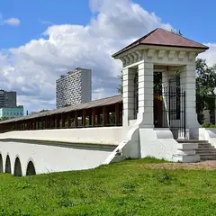
- Ростокинский акведук · Акведук XVIII века · м. ВДНХ
- 12 минут пешкомИнкубо · Квест с актёрами
В сумерках пройти вдоль каменного Ростокинского акведука 1780-х, а потом хоррор в «Инкубо» — «Пожиратель душ» или неоновая «Ночь в Токио» с сильными актёрами.
Открыть план: Акведук в сумерках и хоррор-квестПозвать сюда: Акведук в сумерках и хоррор-квест
Фото: Dmitry Ivanov., CC BY-SA 4.0 · Wikimedia Commons
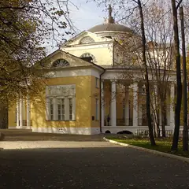
- Усадьба Люблино · Усадьба · м. Волжская
- 6 минут пешкомБлэквуд · Квест-перформанс
Сумеречная прогулка у дворца-ротонды в Люблине, а потом перформанс «Блэквуд»: старое поместье, учтивый дворецкий и выбор, у которого нет правильного ответа.
Открыть план: Усадьба Люблино и поместье БлэквудПозвать сюда: Усадьба Люблино и поместье Блэквуд
Фото: NVO, CC BY 3.0 · Wikimedia Commons
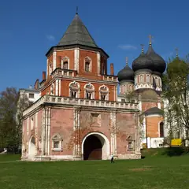
- Усадьба Измайлово · Музей-усадьба · м. Партизанская
- 12 минут пешкомImmerscape · Квест с актёрами
Прогулка по острову усадьбы Измайлово мимо Покровского собора, а потом «Запретная дверь» в Immerscape: актрисы играют с порога и выручают, если совсем страшно.
Открыть план: Царский остров и «Запретная дверь»Позвать сюда: Царский остров и «Запретная дверь»
Фото: NVO, CC BY 3.0 · Wikimedia Commons
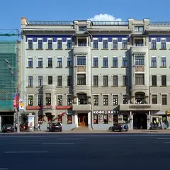
- Музей Булгакова · Музей · м. Маяковская
- 8 минут пешкомPinch · Ресторан
Сначала «Нехорошая квартира» в Музее Булгакова, а потом восемь минут пешком до Pinch у Патриарших: завтраки там подают до 16:00, так что бранч получится в самый раз.
Открыть план: Булгаков и поздний бранчПозвать сюда: Булгаков и поздний бранч
Фото: Usolt, CC BY 3.0 · Wikimedia Commons
- Музей Булгакова · Музей · м. Маяковская
- 8 минут пешкомЗойка · Ресторан
«Нехорошая квартира» №50 в музее Булгакова (по четвергам открыт до 21:00), а потом ужин в «Зойкиной квартире» на Патриарших, где остановилось время.
Открыть план: Булгаковский вечерПозвать сюда: Булгаковский вечер
Фото: Usolt, CC BY 3.0 · Wikimedia Commons
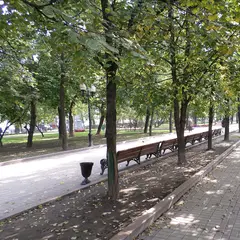
- Чистые пруды · Бульвар и пруд · м. Чистые пруды
- 12 минут пешкомKeep · Гастробар
Круг по Чистым прудам в сумерках, потом свечи и росписи с ангелами в готическом гастробаре Keep во дворах Мясницкой.
Открыть план: Бульвары и готический ужинПозвать сюда: Бульвары и готический ужин
Фото: Vasilii Martynov, CC BY-SA 4.0 · Wikimedia Commons
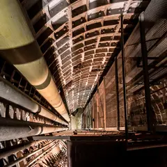
- Бункер-42 · Музей и ресторан под землёй · м. Таганская
- 9 минут пешкомRestaurant by Deep Fried Friends · Ресторан-бар
Экскурсия в секретный бункер холодной войны на глубине 65 метров, а потом бистро и коктейльный паб в Deep Fried Friends в девяти минутах пешком.
Открыть план: Бункер холодной войныПозвать сюда: Бункер холодной войны
Фото: Fastboy, CC BY-SA 3.0 · Wikimedia Commons
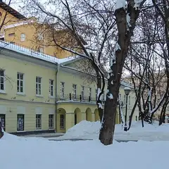
- Дом Гоголя · Музей · м. Арбатская
- 4 минуты пешкомХудожественный · Кинотеатр
Дом, где Гоголь сжёг второй том «Мёртвых душ», и вечерний сеанс в старейшем кинотеатре Москвы.
Открыть план: Вий, Гоголь и киноПозвать сюда: Вий, Гоголь и кино
Фото: Shakko, CC BY-SA 4.0 · Wikimedia Commons
- Дом Гоголя · Музей · м. Арбатская
- 7 минут пешкомNiki Piano Bar · Ресторан с живым роялем
Дом, где Гоголь сжёг второй том «Мёртвых душ», а вечером — ужин под живой рояль.
Открыть план: Гоголь и живой рояльПозвать сюда: Гоголь и живой рояль
Фото: Shakko, CC BY-SA 4.0 · Wikimedia Commons
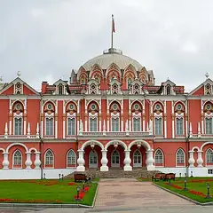
- Петровский путевой дворец · Дворец · м. Петровский парк
- 19 минут пешкомBrunchy Brunch · Арт-бистро
Краснокирпичный дворец в псевдоготике у «Динамо» (внутрь только с экскурсией), а потом завтраки весь день и выставки молодых художников в Brunchy, 19 минут пешком.
Открыть план: Готический дворец и бранчПозвать сюда: Готический дворец и бранч
Фото: WM wm WM, CC BY-SA 4.0 · Wikimedia Commons
- Петровский путевой дворец · Дворец · м. Петровский парк
- 12 минут пешкомClaudia · Средиземноморский ресторан
Краснокирпичный дворец с башнями, как из готического романа, а потом средиземноморский ужин у ЦСКА. Внутрь дворца — только с экскурсией по записи.
Открыть план: Готический дворец и ужинПозвать сюда: Готический дворец и ужин
Фото: WM wm WM, CC BY-SA 4.0 · Wikimedia Commons
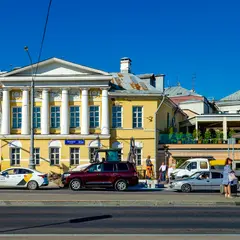
- KGallery Bookcafe · Книжный и кофейня в усадьбе · м. Китай-город
- 1 минута пешкомКабаре «Шум» · Кабаре
Кофе и альбомы по искусству в KGallery, а потом там же, в усадьбе Филипповых, — петербургское кабаре «Шум» с чтениями под баян и спектаклями.
Открыть план: Кабаре и книжный в усадьбеПозвать сюда: Кабаре и книжный в усадьбе
Фото: Никонико962, CC BY-SA 4.0 · Wikimedia Commons
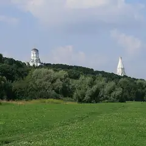
- Коломенское · Музей-заповедник · м. Коломенская
- 19 минут пешкомF5 Коломенская · Компьютерный клуб
Холмы над рекой, белая церковь Вознесения и деревянный дворец царя Алексея Михайловича, а ближе к вечеру катки в F5 у «Коломенской», 19 минут пешком.
Открыть план: Коломенское и F5Позвать сюда: Коломенское и F5
Фото: Ludvig14, CC BY-SA 4.0 · Wikimedia Commons
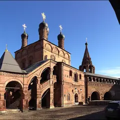
- Крутицкое подворье · Ансамбль XVII века · м. Пролетарская
- дальше на метро или таксиИнтеллигенция 2.0 · Кафе с верандой
Изразцовый теремок и тихие дворики XVII века, когда темнеет, потом одна станция на метро от «Пролетарской» до «Таганской» — и ужин в «Интеллигенции 2.0» с видом на храм.
Открыть план: Крутицы в сумеркахПозвать сюда: Крутицы в сумерках
Фото: Дмитрий Мозжухин, CC BY 3.0 · Wikimedia Commons
- Лефортовский парк · Парк · м. Лефортово
- 8 минут пешкомЧеловек и пароход · Кофейня
Старинный парк с прудами и гротом и кофейня «Человек и пароход».
Открыть план: Лефортово и пароходПозвать сюда: Лефортово и пароход
Фото: A.Savin, CC BY-SA 3.0 · Wikimedia Commons
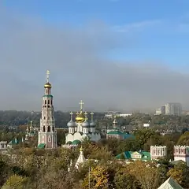
- Новодевичий монастырь · Монастырь · м. Спортивная
- 5 минут пешкомНоводевичье кладбище · Некрополь
Стены Новодевичьего над прудом, потом тихий некрополь с надгробиями Гоголя, Булгакова и Чехова.
Открыть план: Монастырь и некропольПозвать сюда: Монастырь и некрополь
Фото: Ivtorov, CC BY-SA 4.0 · Wikimedia Commons
- Музей Булгакова · Музей · м. Маяковская
- 6 минут пешкомCopen 57 · Датский ресторан
Музей Булгакова, прогулка мимо Патриарших и поздний обед в крошечном датском ресторане на тридцать мест.
Открыть план: Нехорошая квартира и датская кухняПозвать сюда: Нехорошая квартира и датская кухня
Фото: Usolt, CC BY 3.0 · Wikimedia Commons
- Музей Булгакова · Музей · м. Маяковская
- 7 минут пешкомПатриаршие пруды · Пруд и сквер
- 5 минут пешкомPinch · Ресторан
«Нехорошая квартира» №50 в Музее Булгакова, потом круг у Патриарших прудов из «Мастера и Маргариты» и поздний завтрак в Pinch — их там подают до 16:00.
Открыть план: Нехорошая квартира и ПатрикиПозвать сюда: Нехорошая квартира и Патрики
Фото: Usolt, CC BY 3.0 · Wikimedia Commons
- Собор Непорочного Зачатия · Собор · м. Улица 1905 года
- 8 минут пешкомLao Lee · Вьетнамское кафе
Неоготический собор и вечерний органный концерт, потом горячий фо во вьетнамском кафе рядом.
Открыть план: Орган в неоготике и фоПозвать сюда: Орган в неоготике и фо
Фото: A.Savin, Free Art License · Wikimedia Commons
- Собор Непорочного Зачатия · Собор · м. Улица 1905 года
- 8 минут пешкомЗа Крышей · Ресторан на крыше
Органный концерт в неоготическом соборе, а потом коктейли на крыше рядом.
Открыть план: Орган и крышаПозвать сюда: Орган и крыша
Фото: A.Savin, Free Art License · Wikimedia Commons
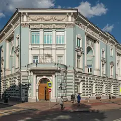
- Зоологический музей МГУ · Музей · м. Александровский сад
- 4 минуты пешкомUgolёk · Ресторан
Старинные витрины со скелетами, чучелами и жуками, а когда стемнеет — ужин из дровяной печи в «Угольке» через дорогу.
Открыть план: Скелеты и дровяная печьПозвать сюда: Скелеты и дровяная печь
Фото: A.Savin, Free Art License · Wikimedia Commons
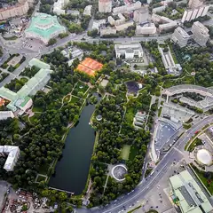
- Екатерининский парк · Парк · м. Достоевская
- 7 минут пешкомВ темноте?! · Ресторан
Неспешный круг у пруда в Екатерининском парке, а через семь минут пешком — ужин в полной темноте под живую музыку: необычно и сближает. Столик — только по записи.
Открыть план: Ужин в полной темнотеПозвать сюда: Ужин в полной темноте
Фото: Gordon01, CC0 · Wikimedia Commons
- Коломенское · Музей-заповедник · м. Коломенская
В Коломенском — Голосов овраг с камнями-валунами и байками про туман, в котором «теряется время». Осенью тут особенно атмосферно.
Открыть план: Голосов овраг и легендыПозвать сюда: Голосов овраг и легенды
Фото: Ludvig14, CC BY-SA 4.0 · Wikimedia Commons
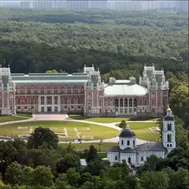
- Царицыно · Музей-заповедник · м. Царицыно
Псевдоготический дворец Баженова и Казакова, мосты и пруды в жёлтых листьях. К закату становится по-хорошему мрачно.
Открыть план: Готика Царицына в листопадПозвать сюда: Готика Царицына в листопад
Фото: MS.Malysheva, CC BY-SA 4.0 · Wikimedia Commons


Места для Хэллоуина 24 из 37
пр. Андропова, 39
Холмы над рекой, белая церковь Вознесения и деревянный дворец царя Алексея Михайловича.
Подробнее и маршрут: КоломенскоеПозвать сюда: Коломенское
Фото: Ludvig14, CC BY-SA 4.0 · Wikimedia Commons
Большая Садовая ул., 10
«Нехорошая квартира» №50, где жил Булгаков. Вт–вс, по четвергам до 21:00.
Подробнее и маршрут: Музей БулгаковаПозвать сюда: Музей Булгакова
Фото: Usolt, CC BY 3.0 · Wikimedia Commons
5-й Котельнический пер., 11
Секретный бункер холодной войны на глубине 65 метров у Таганки: экскурсии и ресторан.
Подробнее и маршрут: Бункер-42Позвать сюда: Бункер-42
Фото: Fastboy, CC BY-SA 3.0 · Wikimedia Commons
Никитский бул., 7А
Усадьба на Никитском бульваре, где Гоголь сжёг второй том «Мёртвых душ».
Подробнее и маршрут: Дом ГоголяПозвать сюда: Дом Гоголя
Фото: Shakko, CC BY-SA 4.0 · Wikimedia Commons
Ленинградский просп., 40
Краснокирпичный дворец в псевдоготике у «Динамо»; внутрь — с экскурсией.
Подробнее и маршрут: Петровский путевой дворецПозвать сюда: Петровский путевой дворец
Фото: WM wm WM, CC BY-SA 4.0 · Wikimedia Commons
ул. Малая Грузинская, 27/13
Неоготический собор на Малой Грузинской; по вечерам здесь органные концерты.
Подробнее и маршрут: Собор Непорочного ЗачатияПозвать сюда: Собор Непорочного Зачатия
Фото: A.Savin, Free Art License · Wikimedia Commons
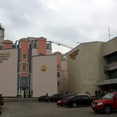
ул. Вавилова, 57
Музей эволюции с чучелами животных со всего мира и интерактивными залами.
Подробнее и маршрут: Дарвиновский музейПозвать сюда: Дарвиновский музей
Фото: Cybersky, CC BY-SA 3.0 · Wikimedia Commons
Большая Никитская ул., 6
Старинный музей на Большой Никитской: скелеты, чучела и коллекции насекомых.
Подробнее и маршрут: Зоологический музей МГУПозвать сюда: Зоологический музей МГУ
Фото: A.Savin, Free Art License · Wikimedia Commons
Крутицкая ул., 8
Тихие дворики, изразцовый теремок и старинные стены — машина времени посреди города. Вход свободный, особенно атмосферно в сумерках.
Подробнее и маршрут: Крутицкое подворьеПозвать сюда: Крутицкое подворье
Фото: Дмитрий Мозжухин, CC BY 3.0 · Wikimedia Commons
Красноказарменная ул., 1
Старинный регулярный парк с прудами и гротом — одно из самых тихих мест в городе.
Подробнее и маршрут: Лефортовский паркПозвать сюда: Лефортовский парк
Фото: A.Savin, CC BY-SA 3.0 · Wikimedia Commons
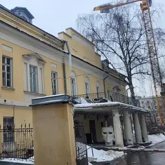
Дашков пер., 5
Новое
Иммерсивный театр в особняке 1827 года: зрители сами бродят по всему дому и выбирают, за кем следить. В 2026-м вернулись «Вернувшиеся» по «Привидениям» Ибсена, 18+.
Подробнее и маршрут: Особняк Дашков 5Позвать сюда: Особняк Дашков 5
Фото: Svetlov Artem, CC BY 4.0 · Wikimedia Commons
ул. Дольская, 1
Готический дворец, пруды и мосты. Красиво в любое время года, особенно на фото.
Подробнее и маршрут: ЦарицыноПозвать сюда: Царицыно
Фото: MS.Malysheva, CC BY-SA 4.0 · Wikimedia Commons
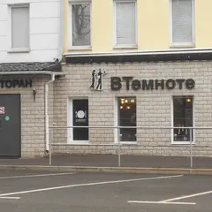
Октябрьская ул., 2
Ужин в полной темноте: обслуживают незрячие официанты, играет живая музыка. Только по записи, сеанс ~2 часа.
Подробнее и маршрут: В темноте?!Позвать сюда: В темноте?!
Фото: Олег Черкасский, CC BY-SA 4.0 · Wikimedia Commons
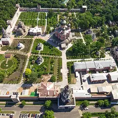
Донская пл., 1
Тихий монастырь за высокими стенами с некрополем и старым садом.
Подробнее и маршрут: Донской монастырьПозвать сюда: Донской монастырь
Фото: mos.ru, CC BY 4.0 · Wikimedia Commons
Чистопрудный бул., 10, стр. 1
Одна из старейших сетей квестов в Москве. Комнату и время выбирайте на сайте — есть с актёрами и без.
Подробнее и маршрут: КлаустрофобияПозвать сюда: Клаустрофобия
Кубанская ул., 10/107
Новое
Старое поместье и учтивый дворецкий, который оказывается не так прост. Нелинейный перформанс с актёрами: правильного выбора нет, всё решаете вы.
ул. Бориса Галушкина, 17
Новое
Одни из самых популярных хоррор-квестов Москвы: неоновая «Ночь в Токио», «Пожиратель душ», «Король шутов». Сильные актёры и декорации, от 6500 ₽.
1-я Владимирская ул., 12, корп. 1
КруглосуточноНовое
Круглосуточный квест-центр у «Перова»: жёсткий хоррор «Антихрист» с сильными актёрами и спокойные загадки вроде «Кода да Винчи». Страх можно подкрутить на месте.
Подробнее и маршрут: Компонент КвестПозвать сюда: Компонент Квест
ул. Покровка, 40Б (подъезд 2)
Новое
Камерный театр в усадьбе Голицыных-Давыдовых, где зрители втянуты в действие. Перед «Вием» — фуршет и бокал игристого. Билеты от 2800 ₽.
Профсоюзная ул., 123
Скелеты динозавров и древних животных в здании-«крепости» у Тёплого Стана.
Подробнее и маршрут: Палеонтологический музейПозвать сюда: Палеонтологический музей
Черницынский пр., 3, стр. 1
Новое
Хоррор-квесты в Гольянове: «Ассистенты морга» и «Объект 1975» с давящей атмосферой и проработанными локациями. Без контакта с актёрами, но страшно всерьёз.
ул. Покровка
Загадочный гастрономический особняк недалеко от Чистых прудов — хороший финал прогулки по бульварам.
ул. Трофимова, 2/1
Новое
Иммерсивный квест в «психиатрической больнице» у «Автозаводской»: актёр-пациент бьётся о стены и прячется на шкафу. Только для крепких нервов.
1-й Угрешский пр., 8
Новое
Страшные квесты-перформансы у МЦК «Угрешская», например «Изгоняющий дьявола». Визжать будете всей компанией, а после игры актёры — сама забота.
Подробнее и маршрут: Hooligan GroupПозвать сюда: Hooligan Group
Как позвать
- Выбери план, место или событие — в карточке адрес, цены и маршрут в Яндекс Картах.
- Нажми «Позвать сюда» — соберётся приглашение-игра для свидания или голосование для компании.
- Отправь ссылку в любой мессенджер: тебе ответят, а компания отметит, куда и когда может. Бесплатно и без регистрации.